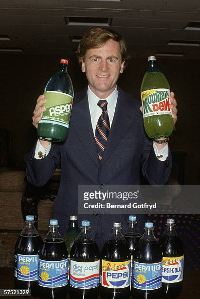

História de Jhon Sculley e sua Trajetória No Mundo da Tecnologia
BIOGRAFIA DE JOHN SCULLEY
Início da Vida e Educação: John Sculley nasceu em 6 de abril de 1939, em Nova York, EUA. Ele estudou na Universidade Brown e na Universidade da Pensilvânia, onde obteve um diploma em arquitetura e um MBA, respectivamente. Sua principal formação é de Design de arquitetura na Universidade Brown e MBA em Administração pela Universidade da Pensilvânia. John Sculley, é um executivo de sucesso é também um investidor em startups de alta tecnologia.
JOHN SCULLEY E A PEPSI

O primeiro trabalho de Sculley foi em 1963, na Marschalk Co. Em 1967, Sculley
entrou para o time da Pepsi como estagiário de um programa de treinamento.
Aos 30 anos, assumiu o cargo de vice-presidente de marketing da empresa
Pepsi-Cola e, posteriormente, como presidente da PepsiCo.
O executivo foi responsável por uma das primeiras pesquisas de consumo da empresa.
Era um teste de produtos em domicílio da qual participaram 350 famílias.
O resultado do trabalho foi o lançamento de novos produtos, de diferentes
tamanhos, pela companhia de bebida.
Em 1970, começou a guerra das colas, com a Pepsi investindo no marketing
para tentar destronar a Coca-Cola.
Ele foi responsável por uma campanha que ajudou a popularizar a Pepsi na época:
a Pepsi Challenge.
No ano de 1974, John Sculley foi promovido ao cargo de presidente da divisão
internacional de operações de alimentos da PepsiCo.
Ele foi responsável por uma reforma na área, que tinha como intuito diminuir
as perdas financeiras e melhorar a qualidade da receita e dos produtos.
JOHN SCULLEY E A APPLE
No ano de 1974, John Sculley
foi promovido ao cargo de presidente da divisão internacional de operações de
alimentos da PepsiCo.
Ele foi responsável por uma reforma na área, que tinha como intuito diminuir as
judou a estabelecer as vendas do Apple II e a lançar o Mac.
Contudo, dentro da Apple nem tudo foi fácil para John, ele sofreu uma tentativa
de boicote de Steve Jobs, mas os diretores ficaram ao lado de Sculley.
Sob sua liderança, as vendas da Apple aumentaram consideravelmente, passando de
US$ 982 milhões em 1983 para US$ 7,9 bilhões em 1993, ano em que saiu da empresa.